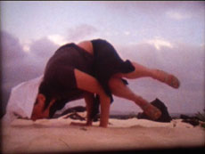

|
EVI EUROPA
Sister O'Mercy | 2009 | 12'30''
ex: Queer Miniature Series
Format: Super 8 auf DV
Originalsprache: ohne Dialoge
Kamera: Evelyn Rüsseler
Schnitt: Evelyn Rüsseler
Mit Isabell Spengler
Gedreht auf Lanzarote, Kanarische Inseln im März 2008
Nach einem langen Tag im Hospital möchte Sister Mercy möglichst schnell nach Hause. Aber die Welt liegt und stöhnt in Schmerzen, und sie ist Sister Mercy. Zwischen Sanddünen, Meer und einer einsamen Strasse liegen ihre Patienten und brauchen sie. Ihre Methode stammt aus der Emotional School, heisst "tiefes Teilnehmen" und basiert darauf, so viel mitzufühlen, dass die Patienten genesen. Sie kümmert sich um die Natur, Dr. Babymans Kultur zuliebe. Sie weiss, ihre Mission ist, eine Hand zu reichen – doch wer kümmert sich um Sister Mercy?
Queer Miniature Series ist ein Kurzfilmprojekt, in dem fiktionale Portraits von Freunden auf der Basis ihrer Energieausstrahlung erstellt werden.
Evelyn Rüsseler, geb. 1961 in Düsseldorf. Studium der Ethnologie und Philosophie, danach Film School in Albuquerque, USA. Spezialistin in Lochkameraphotographie. Seit 2003 Film- und Videoprojekte auf DV, Super 8 und 16mm.
Filme (Auswahl): Queer Miniature Series, Work in Progress 2005 | Kizz 2006 | I Piss On Your Plant … 2007 | Teddy’s Beastiary, Work in Progress 2007 | Bambi Fragments 2008 | Snail Cats 2008 | Sister O’Mercy 2009 | Unicorn Tabloid W.I.P. 2009
Ausstellungen und Screenings (Auswahl): 2007 | Le Ping-Pong d`Amour, White Chapel Gallery, London | UNDERDOX 02, München | 2008 | Cheapy Award, Forum Expanded (Berlinale) | Genderpop Festival, Athen | UNDERDOX 03, München | Mix-Festival, Sao Paulo | Sunscreens, Arsenal Berlin
zurück
|